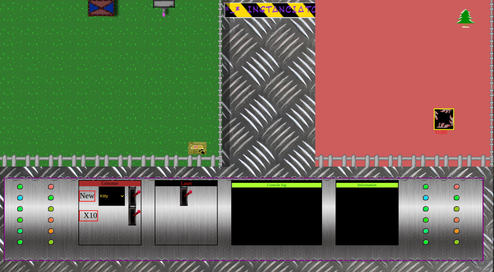

Projets :
Perso[blue]
Pro[violet]
Labybi

Un exercice où il fallait créer un mini jeu à la souris en utilisant que du HTML et CSS (sans utilisation de Javascript!) y compris pour changer dynamiquement de niveau. Je n'ai pas pu m'empècher de le transformer en jeu plus complet par la suite cette fois ci en m'autorisant l'utilisation de Javascript. Tous le reste à été fait en Javascript.
Refonte Graphique d'un site existant
Refonte graphique de la home page et du Header pour le site ILC France. Le but était de rendre plus accessible la navigation très complexe de ce site. La nouvelle version est en cours de développement.
Apprentissage du Java (CNAM à distance)
_version_SANS_NOM .png)
J'ai validé 4 examens en Java avec maitrise des Classes, polymorphisme, héritage, interfaces, exceptions, collections, entrées/sorties, Java EE, Git, Docker etc avec le CNAM à distance en 2022.
Fabrication d'une salle serveur chez moi

J'ai commencé par un serveur Nextcloud pour pouvoir stocker mes données et pouvoir les synchroniser entre mes différents Suite à la récupération de serveurs et l'envie de me mettre à Linux j'ai commencé à installer une salle serveurs chez moi. J'ai commencé par un serveur Nextcloud pour pouvoir stocker mes données et pouvoir les héberger mon site web. J'ai aussi installé un serveur de jeu (Ark, valheim) pour pouvoir jouer avec mes amis. appareils. J'ai ensuite installé un serveur web pour pouvoir
La ferme à objets
Après avoir passé mon examen sur les Classes en Java et travaillé sur l'équivalent en Javascript, j'ai fait un petit jeu qui permet de mieux voir conrètement les objets créés pour pouvoir aider mes collègues ou des apprennants. Ici en l'occurence des Chats, Chiens etc. provenant d'un template HTML, cloné en Javascript, puis modifié en fonction de l'objet avec une classe mère et des classes filles, polymorphisme etc en espèrant vulgariser un peu le concept.
Enigma
Une journée calme au bureau j'ai fait un petit jeu de réflexion où il faut trouver la sortie de chaque page web en cliquant sur les bons éléments pour passer à la page suivante ! Sympa pour faire passer le temps aux collègues :)
Diplômes


Hobbies
Entreprises de rêve
- Chez Mistral !
- Chez Valve
- Chez Cloud Imperium Games
- Chez Quantic Dream
- Chez CD Projekt Red
- Chez Ubisoft
- Chez Rockstar Games
- Chez Bioware
- Chez Supergiant Games
- Chez Microsoft
- Chez Sony
- Chez Gearbox
- Chez Bethesda
- Chez From Software
- Chez Amazon(AWS)
- Chez Epic Games
- Chez Square Enix
- Chez Platinum Games
- Chez Google
- Chez Nintendo
- Chez Riot Games
- Chez Capcom
- Chez Bandai Namco
- Chez Konami
- Chez Sega
- Chez Activision
- Chez Electronic Arts
- Chez Naughty Dog
- Chez Kojima Productions
- Chez Blizzard